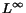

Computational physics simulations are generating larger and larger amounts of data. They operate on a wide variety of input meshes, including rectilinear meshes, adaptively refined meshes for Eulerian hydrodynamics, unstructured meshes for Lagrangian hydrodynamics and arbitrary Lagrange-Eulerian meshes. Very often, these data sets contain special physical features such as material interfaces, physical boundaries, or thin slices of material that must be preserved when the field is simplified. In order to ensure that these features are preserved, the simplified version of the data set needs to be constructed using strict  error bounds that prevent small yet important features from being eliminated.
Data sets of this type require a simplification algorithm that is capable of approximating data sets with respect to several simplification criteria. The cells in the approximation must satisfy error bounds with respect to the dependent field variables over each mesh cell, and to the representation of the discontinuities within each cell. In addition, the simplification algorithm must be able to deal with the wide range of possible input meshes as described above.
We present an algorithm for generating an approximation of a computational data set that can be used in place of the original high-resolution data set generated by the simulation. Our approximation is a resampling of the original data set that preserves user-specified as well as characteristic features in the data set and approximates the dependent field values to within a specified tolerance.
The basis for our simplification algorithm is the subdivision of a tetrahedral mesh as presented by Zhou et al. [1]. We generalize their implementation by removing the restriction that the input data needs to be given on a regular rectilinear mesh consisting of (2)x(2)x(2) cells. Given a data set and polygonal representations for the material interfaces, our algorithm constructs an approximation as follows:
For the cells containing material interfaces, our algorithm computes a field representation for each material. This is done by extrapolating ghost field values for each material at each vertex. When the field approximation error for the cell is computed, the separate field representations, built using these ghost field values, are used to calculate an error for each distinct material in the cell. The decomposition process of a cell that contains multiple materials consists of these steps: